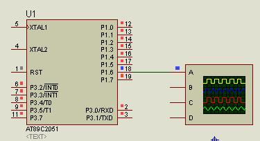
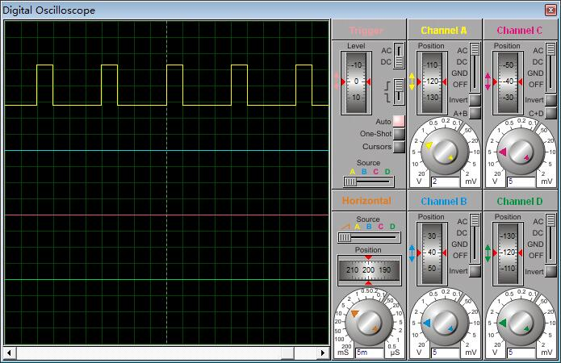

最近需要使用舵机，而想要控制舵机，首先就是产生PWM波。出于通用性的考虑，我就先封装一个产生PWM波的通用函数库。
这个函数库的原理很简单，就是使用定时器，在定时器中断中变化输出电平，并且设置下一次中断的时间。
代码分为types.h、pwm.h和pwm.c，分别如下：
types.h
#ifndef TYPES_H #define TYPES_H typedef char bool; typedef char int8; typedef unsigned char uint8; typedef int int16; typedef unsigned int uint16; typedef long int32; typedef unsigned long uint32; #define true 1 #define false 0 #define null 0 #endif
pwm.h
/* 本文件定义了51单片机产生PWM波的函数库 开始产生PWM波，p_pulse为高电平脉宽（微秒），p_period为周期（微秒） void pwm_start(uint16 p_pulse,uint16 p_period) 停止产生PWM波 void pwm_stop() 如需修改PWM波的引脚、系统时钟频率和定时器号，请在pwm.c中修改 */ #ifndef PWM_H #define PWM_H #include "types.h" void pwm_start(uint16 p_pulse,uint16 p_period); void pwm_stop(); #endif
pwm.c
/*
本文件实现了pwm.h中定义的函数
如需修改PWM波的引脚，请修改PWM_PIN宏定义
如需修改系统时钟频率，请修改CLK_FREQ_100HZ宏定义，CLK_FREQ_100HZ是晶振频率的百分之一
如需修改定时器号，请修改TIMER_NO宏定义
*/
#define PWM_PIN P1^6
#define CLK_FREQ_100HZ 40000
#define TIMER_NO 1
#if(TIMER_NO==0)
#define TMOD_SET() TMOD&=0xF0;TMOD|=0x01;
#define THX TH0
#define TLX TL0
#define TRX TR0
#define TFX TF0
#define ETX ET0
#define INTERRUPT_NO 1
#else
#define TMOD_SET() TMOD&=0x0F;TMOD|=0x10;
#define THX TH1
#define TLX TL1
#define TRX TR1
#define TFX TF1
#define ETX ET1
#define INTERRUPT_NO 3
#endif
#include "pwm.h"
#include "reg51.h"
sbit PIN=PWM_PIN;
static uint8 g_high_thx,g_high_tlx;
static uint8 g_low_thx,g_low_tlx;
static bool g_ishigh;
void pwm_start(uint16 p_pulse,uint16 p_period)
{
#if(CLK_FREQ_100HZ>120000)
uint16 t_high=p_pulse*(CLK_FREQ_100HZ/120000);
uint16 t_low=(p_period-p_pulse)*(CLK_FREQ_100HZ/120000);
#else
uint16 t_high=p_pulse/(120000/CLK_FREQ_100HZ);
uint16 t_low=(p_period-p_pulse)/(120000/CLK_FREQ_100HZ);
#endif
t_high=65535-t_high;
t_low=65535-t_low;
g_high_thx=t_high>>8;
g_high_tlx=t_high;
g_low_thx=t_low>>8;
g_low_tlx=t_low;
TMOD_SET();
ETX=0;
TRX=0;
TFX=0;
THX=g_high_thx;
TLX=g_high_tlx;
PIN=1;
g_ishigh=true;
EA=1;
ETX=1;
TRX=1;
}
static void on_timer() interrupt INTERRUPT_NO
{
if(g_ishigh)
{
PIN=0;
THX=g_low_thx;
TLX=g_low_tlx;
g_ishigh=false;
}
else
{
PIN=1;
THX=g_high_thx;
TLX=g_high_tlx;
g_ishigh=true;
}
}
void pwm_stop()
{
TRX=0;
TFX=0;
ETX=0;
}
可以编写一个main.c来测试一下：
#include "pwm.h"
void main()
{
pwm_start(5000,20000);
while(1);
}
注意，按照pwm.c中的配置，时钟频率为4Mhz，输出引脚为P1^6，占用定时器1。
在proteus中进行模拟，注意把AT89C2051的时钟频率设置为4Mhz。硬件连接如图：

示波器显示如图：

可以看到指针指示每一格是5ms，而波形图中，高电平占了1格，而整个波占了4格。所以，高电平是5ms，而周期是20ms，与代码逻辑一致。